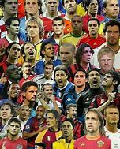
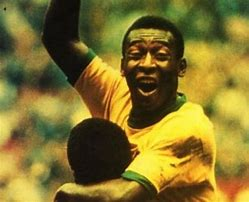
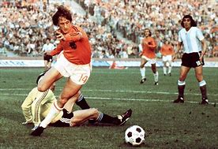

Click aqui para volver al inicio
10.Leyendas del Futbol
Las leyendas del fútbol son los jugadores que más impacto han causado en la historia del fútbol

Algunos de estos jugadores pueden ser:
Pelé, llegando a ganar 3 mundiales con Brasil y ser considerado el mejor jugador de la historia de Brasil

Johan Cruyff, siendo el jugador que cambió el fútbol moderno y el mejor jugador de la historia de Holanda, a parte consiguió que el FC Barcelona ganase su primera Champions

Zinedine Zidane, siendo un jugador conocido por la gran clase que tenía jugando a parte de hacer como entrenador que el Real Madrid ganase varias Champions durante su etapa en el equipo